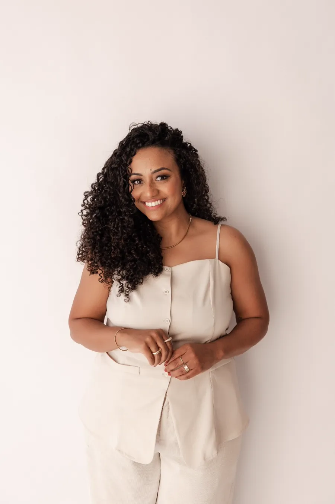

Prescila Martins
Psicóloga · Assessoria empresarial · Palestrante
Escuta técnica com afeto.
“Eu quero ser um girassol para a alma dos que me buscam.”
CRP 08/28396
Online e presencial
Pacotes de terapia
Acompanhamento contínuo, com materiais terapêuticos inclusos.